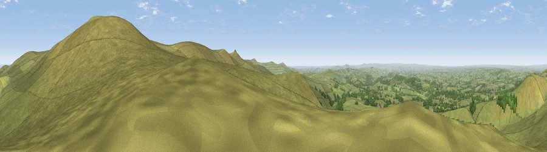

Viewpoint near Lydford
#3292 in England · top 4% of its area beats it · near LydfordWhere it is
The exact computed spot (SX 54062 86275). Click the marker for map links.
The view, rendered

A 360° render of this exact spot computed from the terrain model, tree cover and land cover — summer colours, afternoon light, calibrated against photographs of famous viewpoints. Real trees, hedges and buildings will differ in detail.
The panorama
Grey silhouette: terrain skyline in each direction (720 bearings, Earth curvature and refraction included). Dashed green: skyline with trees (+15 m) and buildings (+8 m) as obstacles. Blue strip: how far the ground is visible on each bearing.
Where the view opens
Wedge length = distance to the farthest visible ground on that bearing (vegetation-aware). Rings at 10, 25 and 50 km.
What fills the view
93% grassland · 6% woodland ·
Angular shares of the visible panorama (visual magnitude), not map area. Landscape diversity 0.13 (0–1 Shannon).
Key numbers
More beautiful places nearby
The staircase of upgrades: each row has a higher view potential than everything closer. Driving times are estimates from straight-line distance, calibrated against real road routing — check an actual route before setting out.
| Place | Direction | Drive | Score |
|---|---|---|---|
| Great Links Tor | ENE · 1 km | ~3 min | 77.8 |
| Yes Tor | NE · 6 km | ~12 min | 78.5 |
| Viewpoint near Dousland | S · 16 km | ~29 min | 81.0 |
| Shell Top | SSE · 23 km | ~38 min | 81.8 |
| Viewpoint near Lee Moor | S · 23 km | ~39 min | 82.7 |
| Viewpoint near Downderry | SSW · 38 km | ~57 min | 83.5 |
| Viewpoint near Bucks Mills | NNW · 41 km | ~60 min | 84.0 |
| Viewpoint near Crackington Haven | W · 42 km | ~61 min | 88.1 |
50.65782, -4.06602 · source: screening · position refined by local search. Computed location — check access rights before visiting.